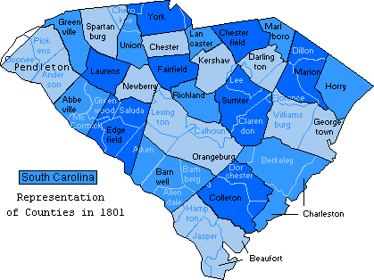

|
Dowdy Abstracts In SOUTH CAROLINA |
| Main Page | Lineages | Email |
|
|
Dowdy Abstracts In SOUTH CAROLINA |
| Main Page | Lineages | Email |
|
Lancaster County Dowdys in Other States Born in SC |
 This page last updated: 5/11 - Page Created |
||||||||||||||||||||||||||||||||||||||||||||||||||||||||||||||||||||||||||||||||||||||||||||||||||||||||||||||||||||||||||||||||||
|
(boundary disputes in this timeframe between NC and SC may link this abstract to the Dowdy family in Cheraw SC) 1789 Chatham Co NC - Deed Bk. E, pg. 106-107 "This Indenture made this 4th day of December, 1789, between Thomas Dowdy, Junior of the County of Anson, NC, planter, of the one part and Thomas Dowdy Senior of Chatham Co NC, Yoeman, of the other part. Witnesseth that the said Thomas Dowdy JR for an in consideration of the sum of 30 pounds to him in hand paid by the said Thomas Dowdy SR, doth hereby acknowledge. All that tract or parcel of land (112 acres) lying & being in the said County of Chatham, on Nicks Creek, it being part of a larger tract or parcel (212 acres) granted to William Dowdy, deceased, by a grant bearing date 23 day of September 1785, and registered in the Registers office in Book D, pg. 328-319, recourse being thereunto will more fully appear. With the said William Dowdy, dying without issue, his brother Thomas Dowdy JR, by heirship became solely entitled to the said land, etc, etc. Witnesses were Berkley Dowdy and Josiah Rogers. Proved during November session 1790 by Josiah Rogers." Cheraw District/Chesterfield
County SC Cheraw District 1810 Census 1812 Chatham Co NC Deeds - Book T, pg. 64 ...between William Norman of Orange County and State of North Carolina, Sarah and William Dowdy of Chesterfield District and State of South Carolina, of the one part, and John Ravensby of the County of Chatham... do grant, bargain and sell and confirm unto the said John Ravensby, a certain tract or parcel of land on the waters of Mudlick Creek... John Ravensby's own corner, Joseph Bridges corner, west on William Dowdy's line, on Thomas Hadlys line. 78 Acres. Wit: William Dowdy,Bartly Dowdy, John Terry.Chatham County, Proven August Session 1813 by the oaths of William Dowdy and John Terry War of 1812 Service DOWDY JAMES 3 REG'T (RUTLEDGE'S) SOUTH CAROLINA STATE TROOPS.
PRIVATE PRIVATE 60 602 DOWDY THOMAS 3 REG'T (ALSTON'S) SOUTH CAROLINA MILITIA. PRIVATE PRIVATE 60 602 James Dowdy b ca 1790 SC; d 12 Aug 1872 Lauderdale Co AL m Feb 1813 Chatham Co NC to Catherine Terry. He volunteered in Chesterfield Dist SC and served as a private in Capt John McNeill's Co of infantry, Col Rutledge's 3rd Regt, S. Carolina Militia, from 29 Jun 1812 to 30 Oct 1812. He applied for bounty land from Lauderdale Co feb 1856 from Lauderdale Co Al, he received BL Wt 133307-80-55. On 1 Aug 1871 he applied for a pension from Lauderdale and received cert. no. SC 14468. His widow applied fro apension on 1 Jul 1876 and received cert. no. WC 6812. In order to prove her marriage to James Dowdy, her brother, John Terry of Chatham NC testified that James Dowdy asked his (and Catherines') father for his siter, then pulled her up behind him on a sorrel horse and rode off in the direction of the justice of the peace. They afterwardlived in peace and hamony as married persons should do. "I was mustered into service in Jun 1812 at Long Bluff SC was marched to Headrells Point near Charleston SC and was there dischargedf for this service. I rec'd two land warrants of 80 acres each. My PO is Florence Ala." signed James x Dowdy, 1 Aug 1871. Attest: John Cooper and Chapman Sego. [ed note: Chapman Sego's mother was Margaret Dowdy, daughter of George Dowdy of SC- see Chatham NC abstract pages at this website] Thomas Dowdy b ?; d 28 Jul 1841, Lauderdale co Al; m 24 March 1823, Lauderdale Co AL to Margaret Brown. He served as a private in Capt Willima Welch's Co, Maj Field's 39th Regt, So Carolina Militia from 24 Sep 1814 to 12 Mar 1815. The widow applied for bounty land on 21 Jan 1851 in Lauderdale AL and received BL wt 21916-80-50. She applied for additional bounty land on 19 Jul 1855 and received BL Wt 42233-80-55. On 6 Nov 1878 she applied for a pension in Lauderdale AL and received WC 24238. 1820 Census Deeds (see Warren Co GA for more info on this family) Warren County GA Deeds Early Wills
Dowdys in Other States Born in SC 1850 STEWART CO TN CENSUS
1850 LAUDERDALE AL CENSUS
1850 CHICKASAW MS CENSUS
1850 AMELIA VA CENSUS
1860 CHATHAM NC CENSUS
Theoretical SC Dowdy Family Group Sheets GEORGE DOWDY OF CHESTERFIELD SC
1. A George Dowdy shows up in land records in early Lauderdale
Co AL THOMAS DOWDY OF CHERAW/CHESTERFIELD CO SC The website editor believes this Thomas is the same person born 1759 in Albemarle Parish , Sussex VA (contrary to traditional thinking that Thomas (b 1759) was in Chatham NC)
1. Thomas' family is gone in 1830 census from SC. The SC Dowdys simultaneously show up in Lauderdale AL. 2. These Lauderdale families have been assigned to Thomas rather than George because George's boys are all gone in 1810 and the Lauderdale folks don't seem to move to Alabama until about 1820. Therefore, they would still need to be in father's household. David and Thomas would be too young to be on their own in 1810. 3. A Jerrimiah has been assigned to this family because he
shows up in 1812 muster rolls for SC. James had a son named Jerrimiah
named after his ?brother. Both James and Thomas (Jr) were in
the War of 1812 (family thing) |
|||||||||||||||||||||||||||||||||||||||||||||||||||||||||||||||||||||||||||||||||||||||||||||||||||||||||||||||||||||||||||||||||||